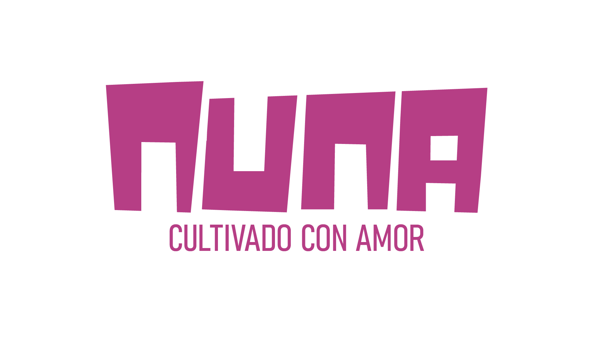
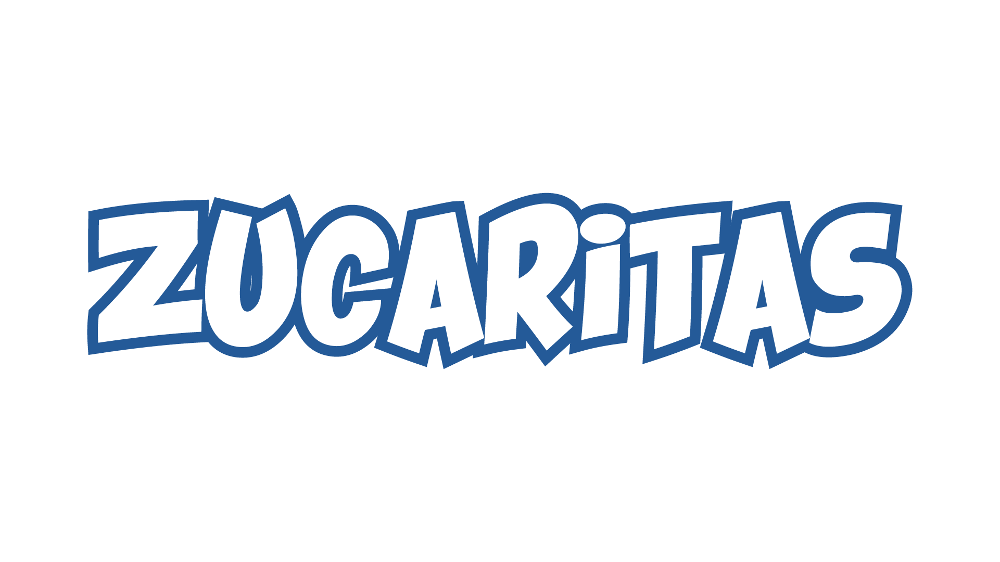

Nuna se basa en una estética artesanal y natural. Se trabajó una paleta cromática cálida, patrones gráficos inspirados en lo andino y una tipografía sólida para comunicar origen, cercanía y cuidado del producto, asegurando coherencia visual en toda la línea.



Propuesta de rediseño de packaging refuerza el posicionamiento de Zucaritas como la marca #1, incorporando la mano de espuma del fútbol americano como elemento gráfico principal. El diseño utiliza colores intensos, una composición dinámica y jerarquía clara de información.